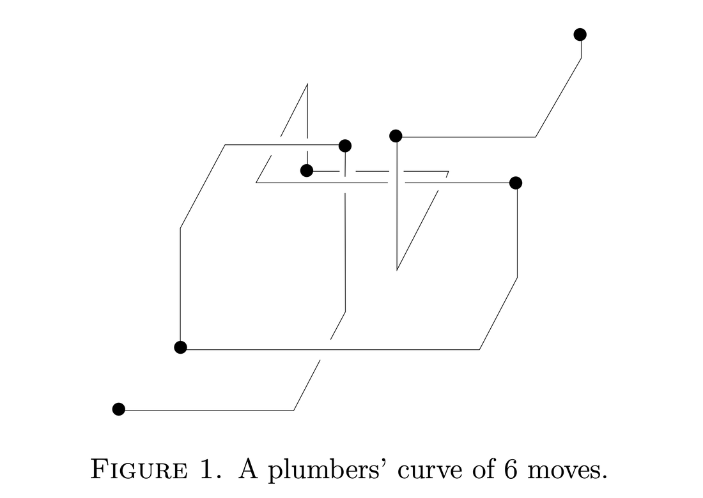

Dr. Chad Giusti
Associate Professor
Department of Mathematics
Oregon State University
chad.giusti@oregonstate.edu
Oregon State website
Google Scholar
Curriculum Vitae
About Dr. Giusti
Professionally, Chad Giusti is an applied mathematician specializing in topology, geometry, complex systems, and neuroscience. In this capacity, he is employed as an Associate Professor in the Department of Mathematics at Oregon State University. He grew up in Oregon and is happy to be home, where the trees are appropriately big and mossy, the coast is rocky, and the skies are the right shade of grey. When he is not drawing pictures of triangles and calling it an attempt to understand neural computation, he enjoys cooking for friends; playing board games well and video games poorly; reading, watching, and listening to fiction; and spending time outdoors with dogs. He tries to make the world a better place for everyone, and to empower people who have not had the same good fortune and advantages he had. However, he would appreciate it if you would forgive him when he falters, as that would help him forgive himself.
Math organizations I support
- The Association for Women in Mathematics
- The National Association of Mathematicians
- The Young Mathematicians' Network
- Mathematically Gifted and Black
- Institute for the Quantitative Study of Inclusion, Diversity, and Equity
- The Mathematical Association of America's Project NExT
Math visualization
- Jeff Weeks' Topology and Geometry Software -- "Curved Spaces" is must-see.
- "The Optiverse" and Other Sphere Eversions
- Thomas Banchoff's Home Page -- check out online projects and artwork
Podcasts I love
Cool science things
Non-Math/Science links
